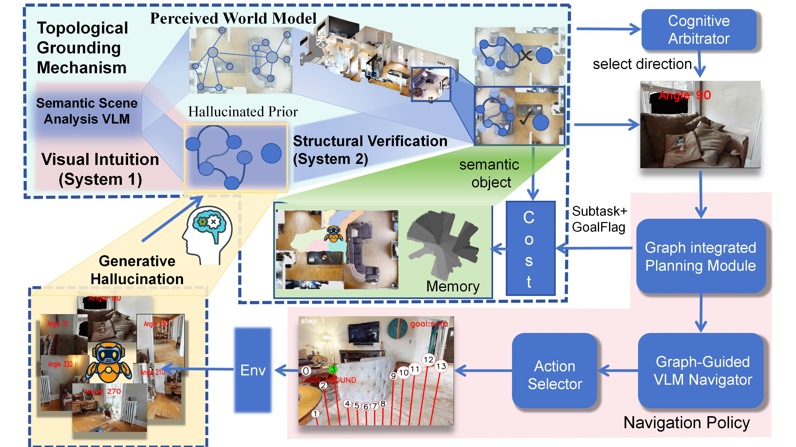
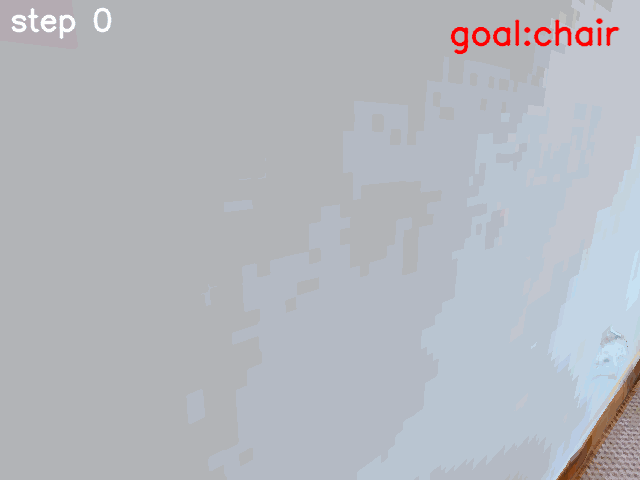
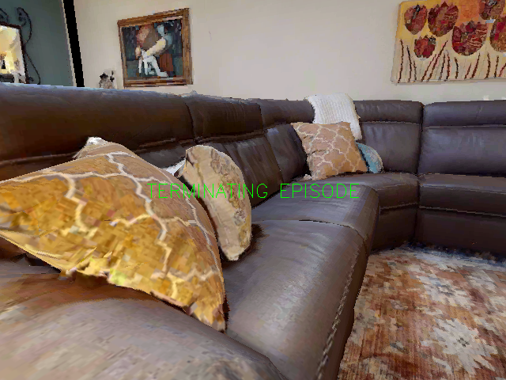
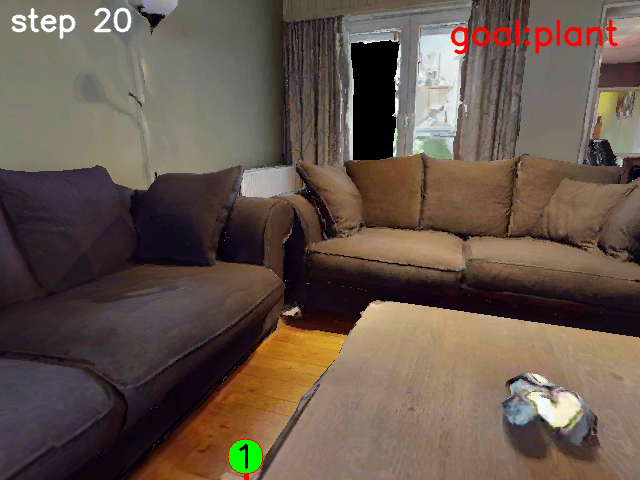

Goal graph prior
An LLM proposes plausible rooms, anchor objects, and relations for the requested category. Hypothetical objects remain distinct from detections.
Zero-shot object navigation via graph matching
* Corresponding author
Prepared for arXiv submission. An arXiv identifier has not yet been assigned.

Finding an object in an unfamiliar environment requires more than recognizing what is visible. HGWM expands the target category into a room–anchor graph prior, maintains persistent spatial-semantic memory, and compares the two to rank candidate directions.
A coarse VLM score captures visual opportunity. Explicit symbolic matching adds structural evidence, and a phase-dependent fusion rule combines it with an LLM recommendation before local action selection. The graph is a hypothesis and observation record, not verified ground truth.
Separate prior knowledge from observed evidence and from the computation that connects them.
An LLM proposes plausible rooms, anchor objects, and relations for the requested category. Hypothetical objects remain distinct from detections.
RGB-D observations accumulate object and room information. Current evidence and retrieved memory share a consistent graph representation.
Room, object, spatial, semantic, and depth features contribute to direction scores. The implementation uses symbolic comparisons, not a learned graph-embedding network.

Success rate (SR) and success weighted by path length (SPL), in percent.
| Method | HM3D v0.1 SR | HM3D v0.1 SPL | MP3D SR | MP3D SPL |
|---|---|---|---|---|
| WMNav | 58.1 | 31.2 | 45.4 | 17.2 |
| HGWM | 62.6 [62.3–62.8] | 31.5 [31.2–31.7] | 46.8 | 17.9 |
Brackets show observed minima and maxima over three HGWM runs on HM3D v0.1, not confidence intervals. The tabulated point is not asserted to be the run mean. Literature baselines were not rerun under a common implementation; these comparisons do not establish statistical significance.
| Configuration | SR | SPL |
|---|---|---|
| Basic VLM / no memory | 67.8 | 29.3 |
| Voxel memory + direct scoring | 70.9 | 30.1 |
| HGWM | 74.4 | 31.9 |
| Without goal prior | 72.1 | 30.8 |
| Without relation refinement | 72.1 | 30.4 |
| Without LLM arbitration | 72.7 | 31.1 |
| Non-adaptive fine weights | 73.5 | 31.3 |
The exact static/uniform mode behind the non-adaptive result is not archived. These ablations do not independently isolate all representation and decision effects. See the paper for reported matching gains and their provenance limits.
18 archived cases · 338 indexed steps · 337 available text logs.

Searching for a sofaCase 115_853 · 6 steps ↗
A longer search traceCase 220_890 · 40 steps ↗Original images and annotations are preserved. A model goal flag is not a verified simulator success label. Cases are historical traces, not a paired comparison.
Browse all 18 cases →This record does not claim conference acceptance or an assigned arXiv identifier.
@misc{ieong2026hgwm,
title = {HGWM: Hierarchical Graph-Guided World Model for Zero-Shot Object Navigation via Graph Matching},
author = {Ieong, I-tak and Tang, Hao},
year = {2026},
note = {Preprint},
url = {https://github.com/itak04/HGWM}
}